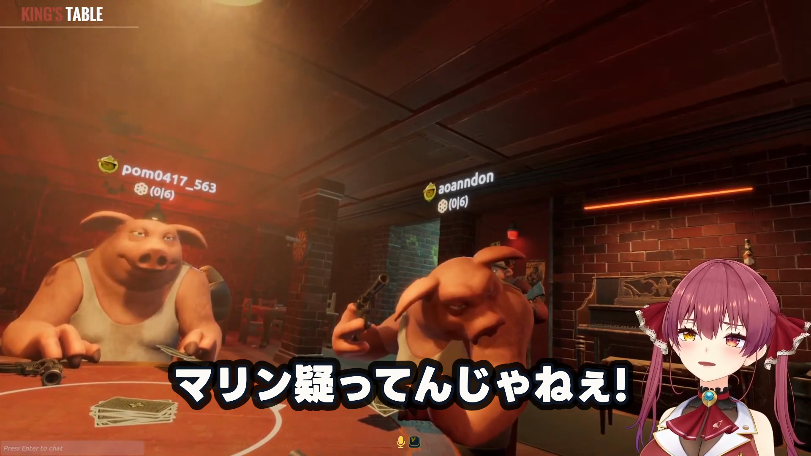
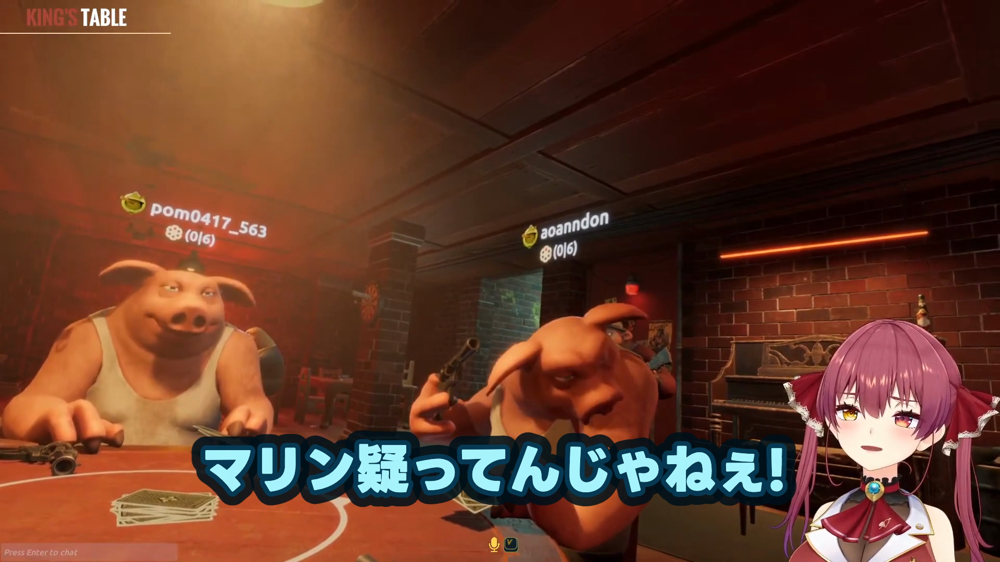

基準候補0

96px / #FFFDF8 / 縁 #111827 8px / 光彩 #000000 12px・82% / LINE Seed JP ExtraBold
同じ先頭8 cue・375 frame。横並び動画は左が基準、右が選定組合せです。

96px / #FFFDF8 / 縁 #111827 8px / 光彩 #000000 12px・82% / LINE Seed JP ExtraBold

100px / #A8F5FF / 縁 #083B55 10px / 光彩 #00111B 17px・86% / LINE Seed JP ExtraBold
既存機械QC: passed